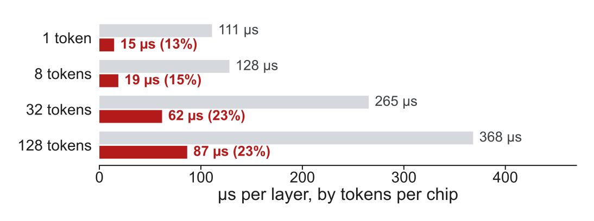
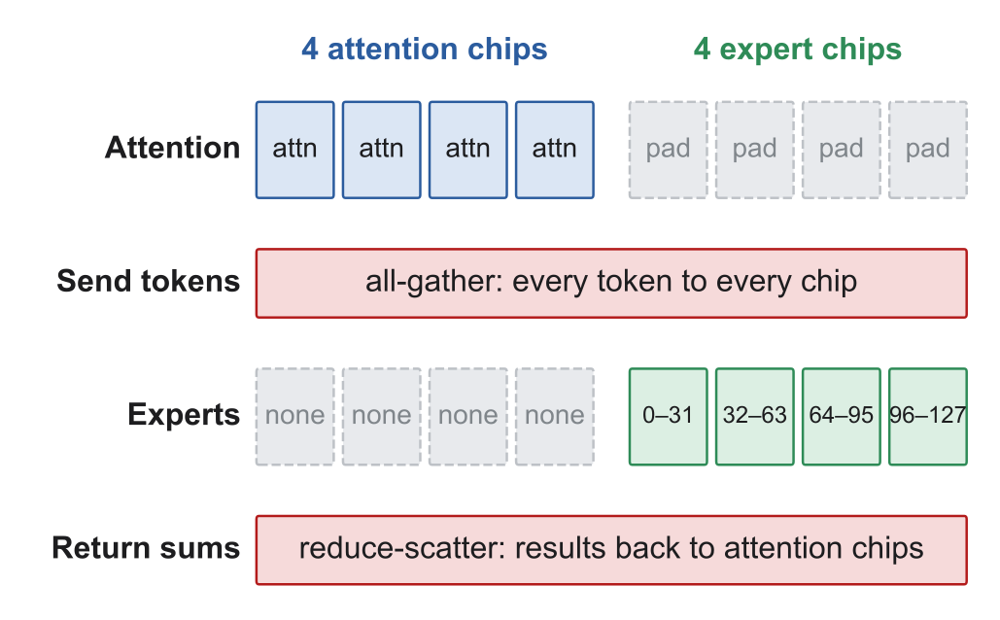
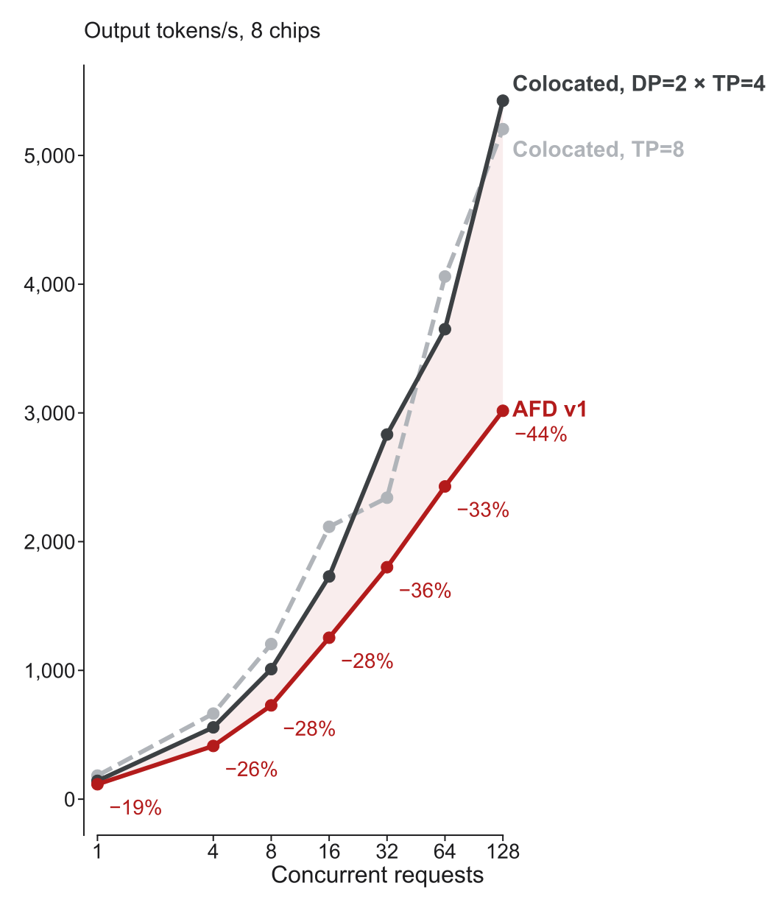

Motivation
- In a mixture-of-experts (MoE) model, attention’s cost grows with the number and length of requests, because it works over each request’s KV cache.
- The experts are large weights shared by all requests, and each token uses only a few, so their cost depends on how many tokens are batched together.
- Colocated serving runs both on every chip and must scale them together, while attention–FFN disaggregation (AFD) gives each its own chips.
- AFD has been built for GPUs, such as ByteDance’s MegaScale-Infer, and we are testing whether it works on TPUs.
Why TPUs make this hard
torch_tpu compiles each step into one program that every chip runs, and chips exchange data only through collectives that all of them call together. AFD needs the two groups to do different work, and our first attempts failed:
- Separate programs for each group made their shared collectives hang.
- torch_tpu doesn’t support a runtime branch (
torch.cond) to pick a role. - An all-to-all that sends different amounts to each chip doesn’t compile.
- Chip-to-chip sends outside the compiled step work, but are far too slow.
We ended up running the same program on every chip and passing each chip’s role in as data.
Cost of the token exchange
Timed on its own, the shared program’s exchange (red) takes 13 to 23% of a colocated layer (grey), while chip-to-chip sends took 1.3 ms, longer than the whole layer.

Our design

- We serve Qwen3-30B-A3B, an MoE model with 128 experts and 58 GB of expert weights, on 8 TPU v6e chips with vLLM.
- vLLM runs two copies of the model on 4 chips each (DP=2 × TP=4), and both copies execute the same compiled program in lockstep.
- We send every request to the first copy and give its chips an empty expert range, which turns them into attention chips that skip the expert work.
- The second copy gets no requests, so its chips act as expert chips, each holding 32 of the 128 experts.
- The grey cells show wasted work, since the expert chips run attention on padding batches and each group waits while the other works.
AFD gives correct output
AFD answers all 4 of our test prompts correctly, such as “What is 17 × 23?” We also compared its output word by word with colocated serving. The two match until the model sees two almost equally likely next words, where tiny rounding differences can flip the choice:
| Prompt | AFD | Colocated |
|---|---|---|
| “In 1969, the Apollo 11 mission” | marked (0.239) | achieved (0.239) |
| “The three laws of thermodynamics are the” | foundation (0.233) | most (0.206) |
AFD’s throughput is 19 to 44% below colocated

Percentages compare against DP=2 × TP=4, the layout AFD is built from, and most of the gap likely comes from the grey cells in our design.
Next steps
- Profile one layer of AFD and of colocated serving to see which of those costs is largest, and fix that one first.
- Split each batch in half so attention works on one half while the experts work on the other, which is how GPU AFD systems hide the waiting.
- Remove the padding work, and the unused expert weights on attention chips, which also frees memory for more requests.
- Rerun the throughput sweep after each fix to see whether AFD reaches the colocated Pareto frontier of throughput versus per-user speed.